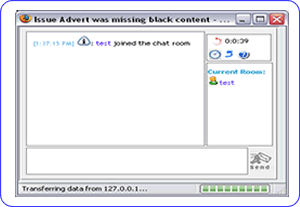

|  |
||
| IM | If you're an IM user this will need no introduction. This is a tool that enables real time collaboration like a meeting with someone taking the minutes. The discussions are recorded and linked to the item you were viewing at the time for easy reference by everyone. | |
| Layout | The window has 4 key parts. Message history, time/tools, rooms and text entry. | |
| History | This is the main focus of the window. This shows you who has joined the meeting and when. It also shows all the details you add during the meeting. | |
| Tools | At the top right it shows the time you've been on-line. It has options to change the look of the history like removing the datetime stamps. It has a link back to the item being discussed (this is relevant only if you've been invited to a meeting room and were not looking at the item to start with. There is also a link to the help. | |
| Rooms | This shows who is in what room. You will always be in your current room and may be joined by others either on your request or by them viewing the same item then opening IM. | |
| Inviting | If you want someone else who's on-line to join you in a room, click on there name and options will appear at the top of the screen. You now have the option of inviting them to your current room (if you're in an item already) or joining them in their room by selecting the link at the top. | |
| Typing | You type your messages at the bottom and click on the send button. You will instantly see your text in the history box and so will all members in your room. In your user preferences you can also set the keyboard Enter or Ctrl-Enter combination to send the text instead of using the mouse to click send. | |